Für wen ist diese Publikation gedacht?
Eigentlich für jeden. Mitbringen sollte man allerding ein wenig Grundwissen im Bereich Telekommunikation.
Was hat diese Publikation zum Thema?
Diese Publikation behandelt das Thema Kommunikationstechnik, d.h. man erhält einen kurzen Eiblick in die Verkabelung und Technik von Telekommunikationsanschlüssen und -anlagen.
Was behandelt diese Publikation NICHT?
Nicht geignet ist diese Publikation für professionelle Telekommunikationstechniker. Da diese schon ein breites Vorwissen haben, erfahren sie durch diese Publikation nicht mehr. Dies würde im Übrigen auch den Rahmen dieser Publikation sprengen.
Wer ist Urheber dieser Publikation?
Sebastian Steins, s.steins@vrweb.de, http://www.onlinetrust.de/
Ich wünsche allen Lesern viel Spaß und Erfolg beim Einrichten von Telekommunikationsanschlüssen!
Sebastian Steins
im März 2002
Als Kabelmaterial wird für analoge TAE-Dosen eine mindestens 2-adrige Leitung benötigt. Für ISDN-Dosen eine 4-adrige. Was TAE- und ISDN-Dosen sind, wird später erklärt.
In aller Regel wird aber für beide Anschlussarbeiten eine 4-adrige Steuerleitung mit der Bezeichnung:
J-Y(ST)Y 2x2
Wenn Sie einen Telefonanschluss haben, stehen an dessen Ursprung 2 Adern. Was Sie mit diesen machen können, wird später hier behandelt.
So sieht das oben genannte Kabelmaterial aus:
|
|
Klemme |
Farbkodierung |
Ringkodierung |
|---|---|---|---|
|
|
1a |
Rot |
Ohne Ringe |
|
|
1b |
Blau (bei 2x2-Kabel: Schwarz) |
Einzelringe, weiter Abstand |
|
|
2a |
Weiß |
Doppelringe, weiter Abstand |
|
|
2b |
Gelb |
Doppelringe, enger Abstand |
Heutzutage bezeichnet man die einzelnen Kabelstränge mit Farbkodierungen. Früher war es jedoch üblich, Ringkodierungen zu benutzen; ich habe oben beide Arten berücksichtigt.
Zum Anschluss eines analogen Telefones werden nur (1/2)A + (1/2)B-Adern verwendet. Nie z. B. 1A+2B.
Für das Anschließen von analogen Telefonen werden wie oben bereits erwähnt 2 Adern benötigt. Desweiteren werden TAE-Dosen benötigt, an die später das Engerät (z.B. Modem, Telefon oder Fax) angeschlossen wird.
Es gibt grundsätzlich DREI verschiedene Arten von TAE-Dosen:
TAE-F-Dose: Zum Anschluss EINES Telefones
TAE-NFN-Dose: Zum Anschließen von 2 Nicht-Telefonen und einem Telefon (1 Leitung)
TAE-NFF-Dose: Zum Anschließen von 1 Nicht-Telefon und einem Telefon (2 Leitungen)
|
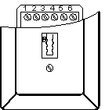 |
Die Abbildung zeigt eine TAE-F-Dose, die einen Schlitz für das Anschließen eines Telefones hat. Wenn man die Dose aufschraubt, sieht man oben eine Schraubenleiste (von 1 bis 6), an die die Kabel angeschlossen werden.
|
|
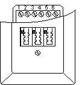 |
Die Abbildung zeigt eine TAE-NFN-Dose, an der man sowohl 2 Nicht-Telefone und ein Telefon anschließen. Auch hier sieht man die Schrauebnleiste. |
|
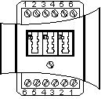 |
Diese Dose fällt ein wenig aus der Reihe: Anschließen kann man 2 Telefone und 1 Nicht-Telefon. Das besondere sind die ZWEI Schraubenleisten. Dadurch, dass 2x6 Schrauben zu finden sind, bedeutet, dass man 1 Telefon an Leitung B und ein Telefon und/oder ein Nicht-Telefon an Leitung A anschließen kann. |
Das Anschließen einer TAE-Dose gehört zu den einfachsten Disziplinen im Bereich der Telekommunikationstechnik.
Die folgende Tabelle zeigt, wofür die einzelnen Schraubklemmen dienen:
|
Klemme 1: |
A-Ader (Potential -60V, wenn kein abgehobener Apparat angeschlossen ist)
|
|
Klemme 2: |
B-Ader (Potential Erde) |
|
Klemme 3: |
W-Ader, die W(ecker)-Ader kommt aus dem Telefon. Dort ist sie mit einem Schalter mit der A-Ader verbunden. Ist das Telefon aufgelegt, ist die W-Ader mit der A-Ader verbunden und hat das gleiche Potential. Wird das Telefon abgenommen, öffnet sich der Schalter und die W-Ader ist stromlos. Die W-Ader wird i.d.R. zum anschliessen eines Weckers benutzt. Weil die W-Ader beim Gespräch abgeschaltet ist, kann der Wecker durch den Sprechwechselstrom nicht mitklingeln. |
|
Klemme 4: |
E-Ader. Die E(rde) Ader wird nur dann angeschlossen, wenn man an der TAE-Anschlußdose eine Nebenstelle einer Telefonanlage anschließt. Manche Telefonanlagen benötigen die Erde, um Gespräche weiter zu vermitteln oder um das Amt zu holen. Dies ist aber von der installierten Telefonanlage abhängig (sehen Sie hier in die Beschreibung der Telefonanlage). Muß man die Erde anschliessen, ist i.d.R. in der Telefonanlage eine entsprechende Erdklemme vorhanden. Auf keinen Fall die Erde von einer Steckdose abgreifen !!! (Lebensgefahr !!!) |
|
Klemme 5: |
B2-Ader. Weiterführende Ader der TAE-Anschlußdose. An die B2- und A2-Ader kann man eine weitere TAE-Anschlußdose anschließen. Die B2-Klemme ist über einen Kontakt mit der B-Klemme verbunden und sobald ein Telefon eingesteckt wird, sind alle nachfolgenden TAE-Anschlußdosen abgeschaltet (Abhörschutz). |
|
Klemme 6: |
A2-Ader. Weiterführende Ader der TAE-Anschlußdose. Wie B2-Ader (Klemme 5). |
Wenn Ihnen die Beschreibungen für die Klemmen zu technisch sind, folgen hier einige Anschlussbeispiele mit detailierter Erklärung.
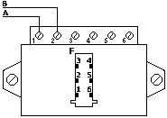
Bei diesem Beispiel geht es um das bloße Anschließen einer TAE-Dose.
Die Abbildung zeigt zwar eine TAE-F-Dose, aber die Verkabelung ist auf sämtliche
andere Arten der TAE-Dosen übertragbar.
Die Leitungen A/B sind Ihnen bereits aus dem Abschnitt Kabel bekannt. Diese Leitungen stellt die Telekommunikationsgesellschaft zur Verfügung.
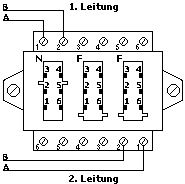
Bei der TAE-NFF-Dose ist lediglich zu beachten, dass beide Leitungen angeklemmt
werden. Diese Dose können Sie nur nutzen, wenn Ihnen zwei Kabelpaare zur
Verfügung stehen.
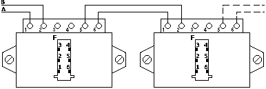
Sie wollen mit einem analogen Anschluss mehrere TAE-Dosen in Ihrer Wohnung verteilen?
Dann benutzen Sie die oben abgebildete Verkabelung.
Wenn Sie an einer Dose den Hörer des Telefons abnehmen, ist an sämtlichen anderen Dosen besetzt.
Selbstverständlich ist auch diese Verkabelung auf alle anderen TAE-Dosen zu übertragen.
Sie haben sich in Ihrem Haus für einen ISDN-Anschluss entschieden?
Dies birgt einige Umstellungsarbeiten an Ihrem Telefonanschluss.
Zunächst einmal gibt es zwei verschiedene ISDN-Dosen. IAE- und UAE (RJ-45-)Dosen.
Die Wahl fällt eigentlich immer auf die RJ-45-Dosen, da diese flexibler sind und auch für die unter Sonderfälle beschriebenen Fallbeispiele geeignet sind.
So verbinden Sie zunächst einmal Ihren NTBA, der von der Telekommunikationsgesellschaft meist kostenlos bereitgestellt wird. Sie verbinden den Hauptanschluss mit dem NTBA.
Um eine IAE-Dose an das NTBA (Netzabschlussgerät) anzuschließen, gehen Sie nach dieser Abbildung vor:
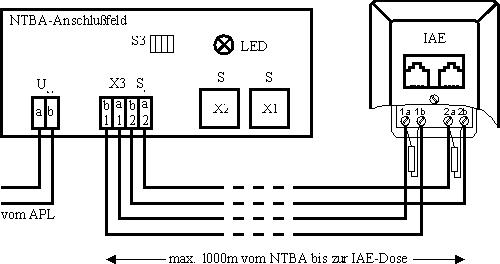
Zwischen 1a und 1b sowie zwischen 2a und 2b an der IAE-Dose muss jeweils ein
Widerstand von je 100 OHM geschaltet werden.
Mehrere IAE-Dosen hintereinander zu schalten ist selbstverständlich ebenfalls möglich. Hierbei muss lediglich die LETZTE IAE-Dose mit Widerständen versehen werden.
Gehen Sie nach dieser (leider etwas chaotischen) Abbildung vor:
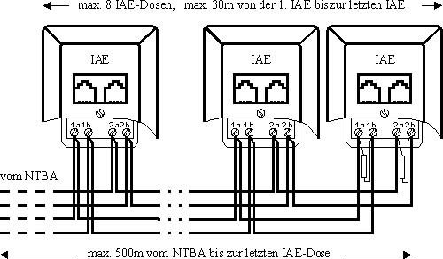
Zum Anschließen der eingangs empfohlenen RJ-45-Dosen ist vollkommen äquivalent zu dem Anschluss von IAE-Dosen.
Hierbei muss lediglich diese Tabelle beherzigt werden:
|
Bezeichnung auf der IAE-Dose |
Bezeichnung auf der UAE-Dose |
|---|---|
|
1a |
4 |
|
1b |
5 |
|
2a |
6 |
|
2b |
3 |
Aufgrund dieser Tatsache ist der S0-Bus wie folgt zu verlängern:
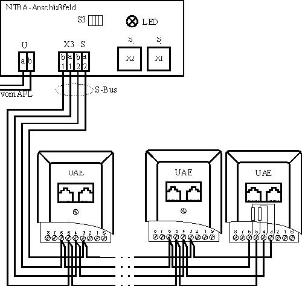
Die 100OHM - Widerstände sind demzufolge wie folgt anzuschließen:
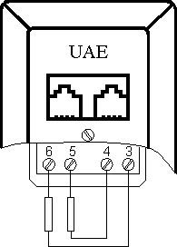
Das heißt: 100OHM zwischen 3 und 6 und 100OHM zwischen 4 und 5.
In diesem Abschnitt werde ich darauf eingehen, wie man RJ-45-Dosen entgegen ihrem Verwendungszweck verwenden kann.
Die wohl bekannteste und sehr häufig verwendete Möglichkeit, eine RJ-45-Dosen nicht nur für Telefone zu verwenden, besteht darin, ein einfaches Netzwerk mit RJ45-Steckern aufzubauen.
Dazu verbindet man mit einem 8-adrigen Kabel Dose A mit Dose B, und zwar jeweils Schraubklemme 1 mit Schraubklemme 1, Schraubklemme 2 mit Schraubklemme 2, und so fort bis Schraubklemme 8.
Die entsprciht einer kompletten 1:1 Verlängerung.
Nun verbindet man den Router oder Switch mit Dose 1; und Dose 2 mit dem Computer.
Achtung:
Wenn Sie eine Direktverbindung zwischen zwei PCs erhalten möchten, benötigen Sie normalerweise ein sogananntes Cross-Patch-Kabel. Dieses Kabel ist nicht 1:1 beschaltet, welshalb Sie bei einer Direktverbindung folgendes beachten sollten:
Computer 1 - Cross-Kabel - UAE-Dose - KABELLEITUNG - UAE-Dose - normales Patch-Kabel - Computer 2
Ansonsten würden Sie ja die CROSS-Beschaltung der Netzwerkkabel wieder aufheben.
Über den Weg der 1:1 Verlängerung mit UAE-Dosen kann man auch andere Kabel verlängern, z.B. die Modem-Funktion einer TK-Anlage.
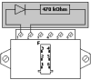
Einige Zeit wurde vom Netzbetreiber (Telekom AG) ein sogenannter PPA auf der
TAE-Anschlußdose installiert. Über ein Zentrales Prüfsystem
können so z.B. Leitungsunterbrechungen festgestellt werden. Dieser besteht
aus einer Diode und einem 470kOhm-Widerstand, die in einem schwarzen Gehäuse
vergossen sind. Der PPA (Passiver Prüfabschluss) wird heute kaum mehr verwendet.
Aufbau:
TAE-Dose Schraubklemme 1 - Diode - 470 kOHM Widerstand - TAE-Dose Schraubklemme 2
Es gibt die verschiedensten Endgeräte für einen Telefonanschluss.
Bei einem analogen Anschluss gibt es jedoch nicht besonders viele:
Modem - Stellt eine Wählverbindung zwischen zwei Computern her.
LCR - (Least-Cost-Router, engl.: Minalmal-Kosten-Wähler) Sucht sich unter den verschiedensten Telekommunikationsanbietern den günstigsten Tarif und verbindet mit diesem.
Telefon - Das wohl gängiste Endgerät
Fax
TK-Anlage - Eine Telefonanlage, an die man o.g. Endgeräte anschließen kann. Einige Anlagen erlauben es, beispielsweise eine Hausklingel fernzusteuern. Derartige Funktionen sind jedoch keine Errungenschaft des Telefonnetzes.
CLIP-Display - Kleines Gerät, welches die Nummer des Anrufers einschaltet, wenn dieser die Rufnummernübermittlung EINgeschaltet hat.
Anrufbeantworter
Wesentlich mehr Endgeräte gibt es für den ISDN-Anschluss:
Das NTBA - (Netzabschlussgerät) wird vom Netzbetreiber kostenlos bereitgestellt. Er stellt eine Art Schnittstelle zwischen dem analogen und dem ISDN-Netz dar
ISDN-Telefon/-Fax
ISDN-Monitor - Überwacht eingehende, ausgehende Anrufe sowie Tarifkosten
a/b-Wandler - erlaubt das Anschließen von analogen Endgeräten an eine ISDN-Dose
Telefonanlage - s.o.
PC-Karten für ISDN - Berühmtes Beispiel ist die FRITZ!-Karte von AVM. Sie verbindet zwei PCs miteinander über eine Wählleitung
Alle analogen Geräte sind mit einem a/b-Wandler oder analog-fähigen TK-Anlage auch betreibbar an einem ISDN-Anschluss.
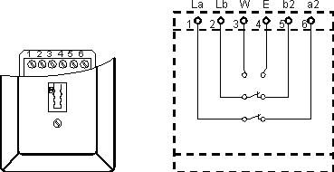
TAE-F-Dose
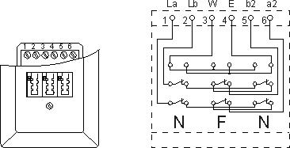
TAE-NFN-Dose
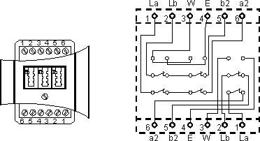
TAE-NFF-Dose
(c)
Sebastian Steins, s.steins@vrweb.de, 2001-2002
Verwertung erlaubt, Wiedergabe nur mit Genemigung des Autors. Dieser Text wird
kostenlos zur Verfügung gestellt und erhebt weder Anspruch auf Vollständigkeit
noch auf Richtigkeit der gemachten Angaben. Für Links haftet der Autor
in keinerlei Hinsicht.